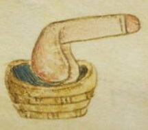
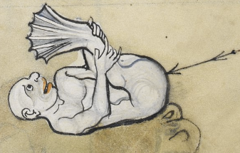

Introduction and credits
This is a polari version of the King James Bible, produced by the Manchester (UK) house of the Sisters of Perpetual Indulgence. Polari – a mixture of French, Italian, Cockney and a whole host of other languages – was once used as an argot in the UK gay community, and has an interesting history in its own right. Since the decriminalisation of homosexuality some years ago it is no longer used as a means of concealing meaning from outsiders. It is, instead, used for its tremendous camp value.
Polari reached its apogee with the inspired script-writing of Barry Took and Marty Feldman in the tremendously popular 1960s BBC radio series Round the Horne. In this, a favourite feature involved “Julian and Sandy” two outrageously camp characters, played by Kenneth Williams and Hugh Paddick, engaged in a variety of different business ventures patronised by the urbane Kenneth Horne. Much of their dialogue was in high-polari, and up-and-down the UK millions of families tucked in to their Sunday roast unaware of much of what was being said. Indeed, had the BBC management been aware of the meaning of much of Took and Feldman’s brilliant writing, the show would have been taken off the air.
The Sisters of Perpetual Indulgence are an international order of gay and lesbian nuns and monks. The UK sisters have always used polari in their ceremonies (and, for that matter, in everyday use). It is, in fact, quite surprising how much polari has entered mainstream gay language (for example, chicken or naff), and in recent years there has been a resurgence in interest in the language, similar to that in Gaelic – although Polari is arguably a living language.
History
Work on the original King James Bible began early in the 17th century, and it has become a watchword for the majesty and power of its language. Vulgarising it by translating it in to Polari would be an act of cultural vandalism akin to translation in to Scots. But good taste has never yet limited the Sisters’ activities, so we did it anyway.
Besides a phrase like Rom 6:23 – For the parkering ninty of kertever is carking it – has a beauty and majesty all of its very own.
The translation grew from a chance conversation between Sr. Matic de Bauchery and Sr. Martini Bianca on Polari and musing about the fact that it should be possible to translate from common English to Polari “using steam” (it should be noted that some of the older sisters have only a tenuous grasp on new technology and personal hygiene). As the sherry flowed, the idea began to take shape, and a desire expressed that such a “steam polyglot” also be connected to the “electric telegraph”.
The requirements were then written on the back of an envelope and sent to a group of research nuns based at the Polari Research Endeavour (PRE) at the City University Manchester (CUM) – formerly the Longsight Academy for Wayward Girls.
There, a group of crack (addled) polari linguists and computer scientists studied the problem. The solution to which they came was a relatively simple one, involving using a scripting language called Perl – although this, apparently, has nothing to do with neckalces.
Essentially, the bible was divided in to its component books, and each of these read in verse by verse and run through a filter written in Perl which performed a number of transformations and substitutions on the text based on a set of rules. There are currently a little over 800 rules, so given the 31,000 verses in the bible this requires a total of something like 24,000,000 transformations. Another Perl script then formatted the polari in to HTML.
This two stage approach has the advantage that tools like Diff can be used to check what the translator hath wrought and also the polari files can be easily converted to other formats, like troff, PDF or postscript. The difficult bit in all this (other than learning Perl!) was defining all the rules of translation and “tuning” them to make the more popular bits of the bible even funnier than they are in the original language.
– Sr. Matic deBauchery, SPI Manchester, March 2003
Note to the second edition
Work on the first edition was stopped (due to commitments of other – paying – work) and the edition hurriedly put online for initial comment by the other nuns. Word soon leaked out, and within a few months there were links to the website from all over the world and the project had already been mentioned on National Public Radio in the USA.
Work on the second edition began when Sr. Matic returned to the convent having been working away for the past year and decided to take a few months off chilling out and revisiting Perl and various other delights. This also coincided with the convent’s acquisition of a small supercomputer, kindly donated by the Pablo Escobar centre for linguistic research. The new system, combined with a complete re-write of the translation software from scratch, improved the efficiency of translation 15 fold. The original software and hardware could translate the entire text in about 24 hours. It now takes a little over an hour.
Note to the third edition

Following a now familiar pattern, work on the second edition was suspended when other (paying) work came up, and no more was done on the project in well over a year other than produce a special printed and bound version of the first few books of the Polari Bible for the Buxton Festival 2004.
Unfortunately, shortly thereafter, the source-files for the project were inadvertently and irrevocably deleted. All that remained was the translated bible available on the Sisters’ website. Fortunately, among the files on the website was an (old) version of the translation lexicon, which represents the greatest part of the work of translation.
The third (and hopefully final) attempt at translation was begun in early November, and the software entirely re-written, the lexicon and this introduction having been recovered from the website.
Producing it has been an interesting exercise, and it’s taken much more time than anyone could possibly have expected. Thanks are due to: Sr. Martini (Jim O’Reilly) for jointly coming up with the idea, fantastic book-binding for the Buxton Festival, and continued support and belief; Srs. Annie (David Martin) and Gypsy (Jez Dolan) and Amy Rosenthal for their enthusiastic support; and my long-suffering partner Ken (OK – I’m going to look for another assignment tomorrow! I promise) for his understanding in what grew from a piqued interest to an obsession.
Look out for the forthcoming Polari Koran and The Book of Common Screech. As mentioned above, good taste has never limited the Sisters’ activities.
– Tim Greening-Jackson, (AKA Sr. Matic de Bauchery), Manchester, November 2005
Note to the fourth edition
With the inevitability of Groundhog Day, work was abandoned on the Bible for a couple of years, during which time the London House of the Sisters of Perpetual Indulgence was re-established, and one of its members — Sister Dire Morphina (secular name Andy Markham) — asked if it would be possible to use part of the text for an exhibition for Central St. Martin’s College of Art and Design MA artists.
A special fourth edition — with a couple of minor tweaks to enhance the third chapter of Genesis was made.
– Tim Greening-Jackson, London, January 2008
Note to the Fifth Edition
The Polari Bible was revived yet again after discussion with Sr. Gypsy as part of her wider activities to preserve the Polari language and will be going on display in the John Rylands Library of Manchester University.
It is testament to Moore’s Law that the current translation now takes about 20 minutes to complete, whereas the first edition used to take a whole day.
– Tim Greening-Jackson, Manchester, August 2013
Note to the sixth edition
Having reared its head once more with Sr. Gypsy’s activities in the Polari Mission project, The Polari Bible is now in a special sixth edition, a copy of which is to be donated to the JRL as part of their permanent collection but which will also be available in various EPUB and similar formats.
– Tim Greening-Jackson, Manchester, April 2014
Note to the seventh edition
With the weary inevitability of an plotline from The Archers, the project reared its head again in 2014. Sr. Gypsy/Jez Dolan wished to produce a limited run of a new verions, a copy of which was to be presented to JRL to replace the copy they had on loan which was by now not just slightly foxed but majorly badgered.
The typesetting on the sixth edition was a bit ropey and there were various other cosmetic improvements that I wished to make, so the sources were checked out of the repository and work began. The PDF typesetting has once again been done using the wonderful LaTeX typesetting and text processing system. I hope you agree it has been done nicely, particularly when one considers the 1,000 page limit for hard-binding.
– Tim Greening-Jackson, Manchester, June 2014